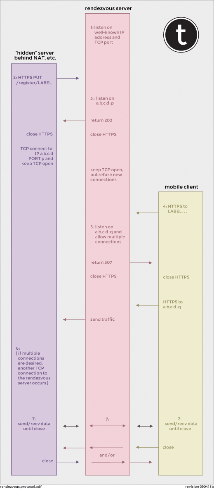

Rendezvous Protocol

The protocol is outlined below:
The rendezvous server resides at a well-known location in the Internet, e.g.,
https://rendez.example.com/The hidden server establishes an HTTPS connection to the rendezvous server, and uses TOTP to authenticate itself.
PUT /register/LABEL HTTP/1.1 Host: rendez.example.com Authorization: TOTP username="ID", response="TKN"where 'ID' is administratively assigned by the provider of the rendezvous server, and TKN is a one-time authentication token.
If the hidden server successfully authenticates itself using 'ID' and 'TKN', and if the hidden server is authorized to use 'LABEL', then the rendezvous server listens on IP address 'a.b.c.d' for port 'p' and sends:
HTTP/1.1 200 OK Content-Type: text/plain a.b.c.d:pand closes the connection. (If an error occurs, the rendezvous server returns a 4xx or 5xx response and closes the connection.)
The hidden server, upon receiving the 200 response, immediately establishes a TCP connection to IP address 'a.b.c.d' port 'p', and waits for activity on that connection In the interim, if the connection fails, the hidden server retries Step 2 accordingly. The rendezvous server will accept at most one connection to IP address 'a.b.c.d' port 'p'.
Instead of a 200, 4xx, or 5xx code, the rendezvous server might return a 3xx code. In that case, the hidden server should process the redirect appropriately.
The mobile client establishes an HTTPS connection to the rendezvous server, e.g.,
https://LABEL.vous.example.com/...If a hidden server with that identity is registered, then the rendezvous server listens on IP address 'a.b.c.d' for port 'q' and sends a 307 redirection:
HTTP/1.1 307 Location: https://a.b.c.d:qThe mobile client, upon receiving the 307 response, immediately establishes a TCP connection to IP address 'a.b.c.d' port 'q' and then begins sending traffic. (If an error occurs, the rendezvous server returns a 4xx or 5xx response and closes the connection.) The rendezvous server will accept multiple connections to IP address 'a.b.c.d' port 'p'.
The hidden server, in addition to processing any data on the connection, may make additional HTTPS connections to the rendezvous server (cf., Step 2). In this fashion, the hidden server should always have something waiting for the next mobile client connection.
Regardless, the rendezvous server simply copies octets from one connection to the other.